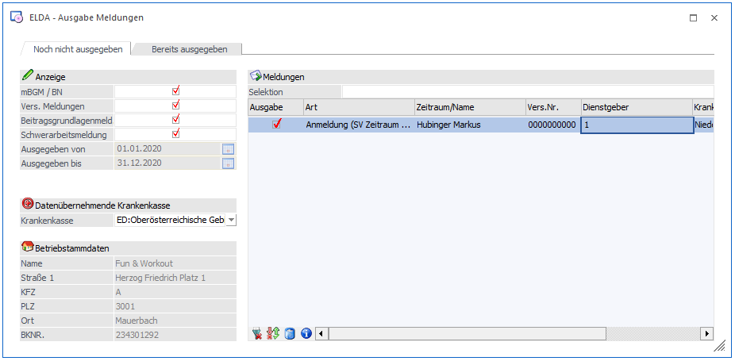
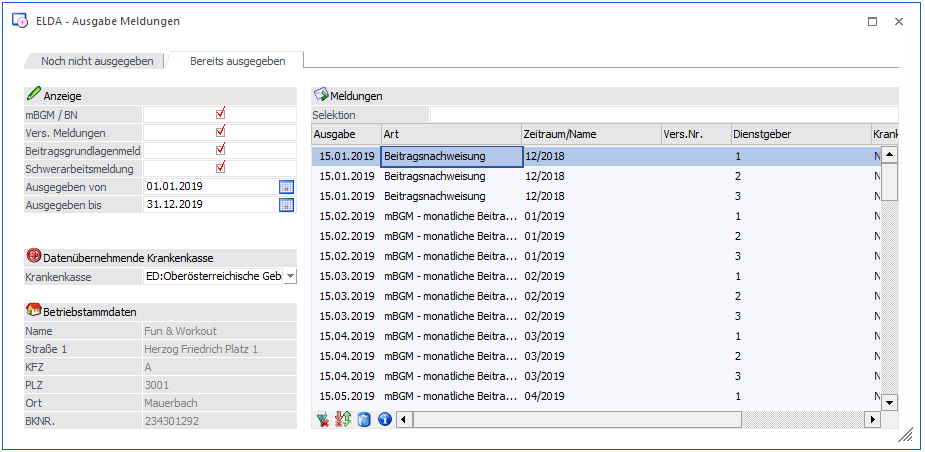
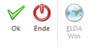
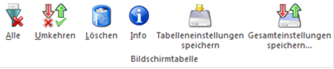

Über den Menüpunkt
1 ELDA
1 Ausgabe elek. Meldungen f. ELDA
können Meldungen an die ELDA verschickt werden bzw. bereits übermittelte Meldungen nochmals gesichtet werden. Dies können sein:
ü Meldungen die den AN betreffen
wie
Anmeldung
Abmeldung
Änderungsmeldung
L16
Arbeitsstättenmeldung
Schwerarbeitsmeldung
ü Meldungen, die den Betrieb
betreffen wie
monatliche Beitragsgrundlagenmeldung (mBGM)

Der Menüpunkt ist in zwei Register aufgeteilt:
ü Noch nicht ausgegeben
ü Bereits ausgegeben
Voraussetzungen
Damit Meldungen elektronisch an die GKK übermittelt werden kann, müssen in den Betriebsdaten die krankenkassenspezifischen Eintragungen vorgenommen werden.
Noch nicht ausgegebene
In diesem Registerblatt, werden nur die Datensätze angezeigt, die noch nicht an die ÖGK übermittelt wurden, aber schon zur Übergabe bereitstehen.
Wo können Daten für die ELDA entstehen?
Es gibt mehrere Möglichkeiten, wie Daten für die elektronische Übermittlung an die ELDA erfasst werden können:
ü Arbeitnehmerstamm
Dort können
Anmeldungen, Abmeldungen, Änderungsmeldungen und dgl. mehr erfasst und
gespeichert werden.
ü Auswertung der Abrechnung
Bei
der Auswertung der Abrechnung werden pro Betrieb die monatlichen
Beitragsgrundlagenmeldungen (mBGM) zur Verfügung gestellt.
ü L16 - Ausgabe
Durch Ausgabe
der Meldungen L16 und E18 (Meldungen gemäß § 109) werden ebenfalls Datensätze
für die Übermittlung erstellt. Im Zusammenhang mit den L16 werden auch die
Arbeitsstättenmeldungen erzeugt.
ü Schwerarbeitsmeldung
Ab 2007
müssen auch die Schwerarbeitszeiten gemeldet werden, wobei die Meldungen über
den Menüpunkt Abrechnen/Schwerarbeitszeiten erzeugt werden können.
Alle diese Daten werden in der Tabelle gesammelt. Wenn der Menüpunkt aufgerufen wird, werden dort alle Datensätze, die noch nicht übergeben wurden, angezeigt.
Zuerst muss entschieden werden, an welche Krankenkasse die Daten geschickt werden sollen. Dazu kann im Eingabefeld
Ø Datenübernehmende Krankenkasse
die entsprechende GKK (im Normalfall ist das die Oberösterreichische GKK) gewählt werden.
Bereits Ausgegebene
In diesem Registerblatt werden jene Datensätze angezeigt, die bereits übermittelt wurde.
Hinweis:
Es werden die bereits ausgegebenen Meldungen erst dann in der Tabelle geladen, nachdem etwaige Selektionen getroffen wurden und der "Anzeigen" Button im Ribbon gedrückt wurde.

Es können folgende Selektionen vorgenommen werden:
Ø Ausgegeben von - bis
gemacht werden, wobei in den beiden Felder über die Matchcode-Funktion ein kleiner Kalender geöffnet werden kann.
Zusätzlich dazu kann über die Checkboxen
Ø mBGM/BN
Ø Vers. Meldungen
Ø Beitragsgrundlagenmeldung
Ø Schwerarbeitsmeldung
entschieden werden, welche Datenbereiche angezeigt werden sollen. Durch Deaktivieren der entsprechenden Checkbox werden die Daten (sofern vorhanden) nicht angezeigt. Diese Option ist vor allem dann sinnvoll, wenn z.B. nach einem bereits übermitteltem Datensatz gesucht werden soll. Dazu gibt es die Möglichkeit, die Datensätze in der Tabelle nach den Kriterien
ü Ausgabe
ü Zeitraum/Name
ü Dienstgeber
zu sortieren. Dazu muss nur das gewünschte Sortierkriterium im Tabellenkopf (dort wo die entsprechende Bezeichnung steht) angeklickt werden.
Unterhalb der Anzeigeoptionen werden die Informationen des jeweiligen Betriebsstammes angezeigt (es wird der Betriebsstamm angezeigt, der mit der entsprechenden Meldung verknüpft ist).
Die einzelnen Felder
Ø Ausgabe
Wenn es sich bei diesem Feld um eine Checkbox handelt, dann kann durch Aktivieren dieser bestimmt werden, dass der Datensatz ausgegeben werden soll. Durch Deaktivieren der Checkbox wird der Datensatz nicht ausgegeben.
Wenn das Feld keine Checkbox beinhaltet, wird statt dessen das Datum, an dem die Meldung ausgegeben wurde, angezeigt.
Ø Art
Hier wird die Art der Meldung (z.B. Anmeldung, mBGM, Abmeldung etc.) angezeigt.
Ø Zeitraum/Name
Wenn es sich bei der Meldung um eine Beitragsnachweisung handelt, wird in diesem Feld das Monat und das Jahr, das die Meldung betrifft, ausgewiesen. Bei allen anderen Meldungen wird der Name des AN, den die Meldung betrifft, angezeigt.
Ø Vers.Nr.
Die Versicherungsnummer des AN wird angezeigt. Ausnahme bildet hier wieder die Beitragsnachweisung - das Feld bleibt leer.
Ø Dienstgeber
Hier wird die Betriebsnummer des Dienstgebers angezeigt. Die Dienstgebernummer wird aus dem AN- oder dem Betriebsstamm übernommen. Um welchen Betrieb es sich handelt, wird unterhalb der Tabelle angezeigt.
Ø Krankenkasse
Es wird die Krankenkasse angezeigt, für die die Meldung bestimmt ist.
Achtung:
Die Datenübernehmende Krankenkasse ist derzeit immer die Oberösterreichische GKK. Unter "Krankenkasse" kann eine beliebige KRK angezeigt werden.
Ø Storno
Bei Beitragsnachweisungen (vor 2019 - ab 2019 werden nur noch mBGM übermittelt) kann durch Aktivieren dieser Checkbox eine Stornomeldung ausgegeben und in weiterer Folge an die GKK übermittelt werden. In diesem Fall wird dann die Checkbox durch das Ausgabedatum der Stornomeldung ersetzt. Wurde eine Stornomeldung ausgegeben, muss die Betragsnachweisung erneut ausgegeben und übermittelt werden.
Buttons

Ø OK
Durch Drücken der F5-Taste werden alle Datensätze, bei denen die Checkbox "Ausgabe" aktiviert ist, ausgegeben.
Im Verzeichnis, das beim Herstellerstamm im Feld
Ø Pfad für Ausgabedateien
hinterlegt wurde, wird die Datei
Ø CWLELDA.GKK
erstellt. Dazu wird im Programmverzeichnis eine Datei
Ø CWLELDATTMMJJJJHHMMSS.GKK
erstellt (TT steht für Tag, MM für Monat, JJJJ für Jahr, HH für Stunde, MM für Minute und SS für Sekunde) - es wird der Ausgabezeitpunkt mit vercodet. Diese Datei kann ggf. noch einmal verwendet werden.
Ø Ende
Durch Drücken der ESC-Taste wird das Fenster geschlossen.
Ø ELDA Win
Dieser Button kann nur dann angewählt werden, wenn auf dem Arbeitsplatz das Programm "ELDA WIN" installiert ist und auch eine Datei CWLELDA.GKK vorhanden ist. Zusätzlich muss in den Herstellerdaten (Menüpunkt Stammdaten/Mandantenstammdaten/Betriebsdaten) der "Pfad für ELDA-Ausgabedateien" hinterlegt werden (sollte im Normalfall C:\GKKDFU\SENDEN\ sein). Das Programm ELDAWIN.EXE muss sich demnach im Verzeichnis C:\GKKDFU\ befinden. Damit kann dann die entsprechende Datei direkt an die ELDA übermittelt werden.
Ablauf
Zuerst müssen die entsprechenden Daten aufbereitet werden. Dies passiert im AN-Stamm (Versichertenmeldungen), oder über die Auswertung der Abrechnung (mBGM). Alle aufbereiteten Daten können über den Menüpunkt
1 Formulare
1 Ausgabe elek. Meldungen f. ELDA
in die Datei CWLELDA.GKK übergeben werden. Dies ist auch (neben dem installierten ELDA WIN-Programm) auch die Voraussetzung, dass der Button anwählbar ist. Durch das Anklicken des Buttons wird das Programm ELDAWIN.EXE gestartet, wobei die Datei CWLELDA.GKK automatisch im Batchmodus übermittelt wird (gemäß den vorhandenen Konfigurationseinstellungen).
Buttons in der Tabelle

Ø Alle
Durch Anklicken des Alle-Buttons werden alle Einträge in der Tabelle zur Ausgabe markiert.
Ø Umkehren
Durch Anklicken des Umkehren-Buttons wird die Selektion "Ausgabe" in das Gegenteil gekehrt: die selektierten Einträge werden deselektiert und die deselektierten Einträge werden selektiert.
Ø Löschen
Wenn der Löschen-Button angeklickt wird, wird die Meldung
Wenn Sie nur die aktive Meldung löschen möchten, dann drücken Sie bitte "Aktive Meldung". Wenn Sie alle Meldungen löschen möchten, die in der Tabelle selektiert sind, dann drücken Sie bitte "Alle Meldungen".
angezeigt. Danach kann - gemäß der angezeigten Meldung - entschieden werden, welche Meldungen tatsächlich gelöscht werden sollen.
Ø Info
Durch Anklicken des INFO-Buttons kann eine Übersicht über die Meldungen angezeigt werden (ausgenommen davon sind die JBGN).
Ø Tabelleneinstellungen speichern
Die Spalten einer Tabelle können grundsätzlich an beliebige Positionen verschoben, bzw. in der Breite entsprechend angepasst werden. Durch Anwahl des Buttons "Tabelleneinstellungen speichern" werden die Einstellungen benutzerspezifisch gespeichert und bei dem nächsten Aufruf des Programmpunktes wieder vorgeschlagen.
Ø Gesamteinstellungen speichern
Im Gegensatz zu "Tabelleneinstellungen speichern" können mit "Gesamteinstellungen speichern" mehrere Tabellenaufbauten gespeichert und nach Wunsch geladen werden. Zusätzlich werden Sonderfunktionen der Tabelle (z.B. "Spalte gruppieren") ebenfalls bei der Speicherung bedacht.
Hinweis:
Bereits ausgegebene Meldungen können über den Reorg gelöscht werden.